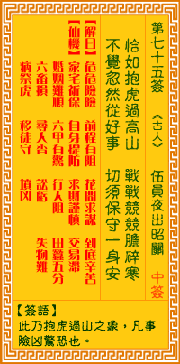

观音灵签第七十五签 【伍员夜出昭关】 |
 | |||
宛如抱虎过山前 战战竞竞胆碎寒 幸得山前逢妙手 方能保得一身安 |
||||
| 【吉凶】 | 中下签 | 【宫位】 | 午宫 | |
| 【签语】 | 此卦抱虎过山之象，凡事险凶惊恐也。 | |||
| 【解曰】 | 惊险重重 前程有阻 若问求谋 到底辛苦 | |||
| 【仙机】 | 此签家宅祈保，自身提防，求财谨慎，交易滞，婚姻难顺，六甲有惊，行人阻，田蚕五分，六畜损，寻人杳，讼亏，失物难，病祭虎，移 徙守，坟凶。 | |||
| 【详解】 | 就似抱虎过山，战战兢兢心碎胆寒;幸好在前方遇得高人相助，方可保得平安。 危险危险，前程阻隔，切莫远行，自宜守节。此签抱虎过山之象，凡事先凶后吉。 本签示之于弟子曰。宛如抱虎过山前之景也。令人战战兢兢胆碎寒者。凡事必须多擘画。千万不得轻举妄动。机密不密则不成。须防口之血半。惟君尔之修身。积 德功夫一至。必能逢得妙手。方能保得一身平安。易言之。危险危险前程阻隔切莫远行自宜守节。先凶后吉者。 此签有”未雨绸缪”之意。意味当事人，凡事都应先做好计划。所谓”养兵千日、用在一时”。只有平日做足了准备，才不会惊慌失措、临时抱佛脚。遇有紧急状 况时，要保持冷静，千万不要轻举妄动、自乱阵脚。如果本身参与了一件涉及机密的重要任务，则应守口如瓶，谨防一时大意而泄漏口风。另外，本身行为端正， 心存善念以诚待人，如此相信纵使遇到再大的困难，也一定会有人愿意伸出援手，帮助你共同度过难关。 | |||
| 【典故】 | 伍员又名伍子胥，春秋时代楚国人，其父兄是朝廷重要官员，他们被楚平王杀死后，伍员和太子健的儿子胜，漏夜逃走。到了昭关，守关 的官员要捕捉他们，伍员和胜分别独自步行出关，躲躲藏藏，提心吊胆，由于过度忧虑，一夜之间，伍员的头发全变白了，伍员和胜终于脱离险境，到达吴国 | |||